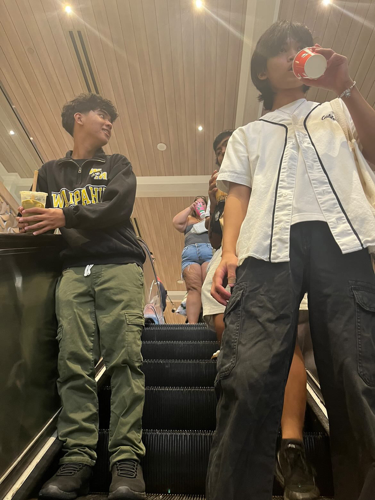
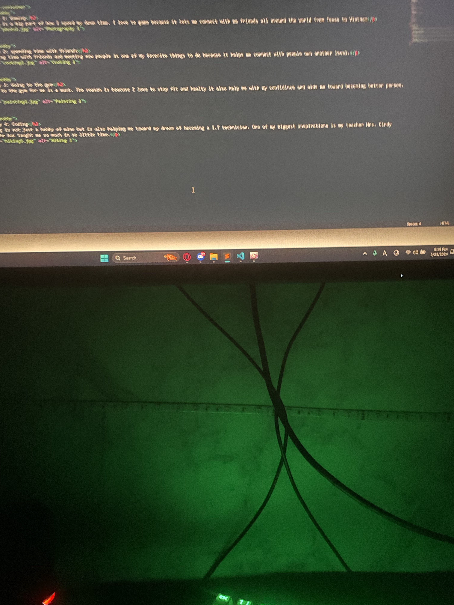

Community service/hobbies
Hobby 1: Gaming
Gaming is a big part of how I spend my down time. I love to game because it let's my connect with my friends all around the world from Texas to Vietnam

Hobby 2: spending time with friends
Spending time with friends and meeting new people is one of my favorite things to do because it helps me connect with people own another level.
Hobby 3: Going to the gym
Going to the gym for me is a must. The reason is beacuse I love to stay fit and healty it also help me with my confidince and aids me toward becoming better person.
Hobby 4: Coding
Coding is not just a hobby of mine but is also helping me toward my dream of becoming a I.T technician. One of my biggest inspirations is my teacher Mrs. Cindy Takara she has taught me so much in so little time.
